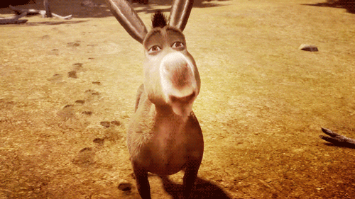
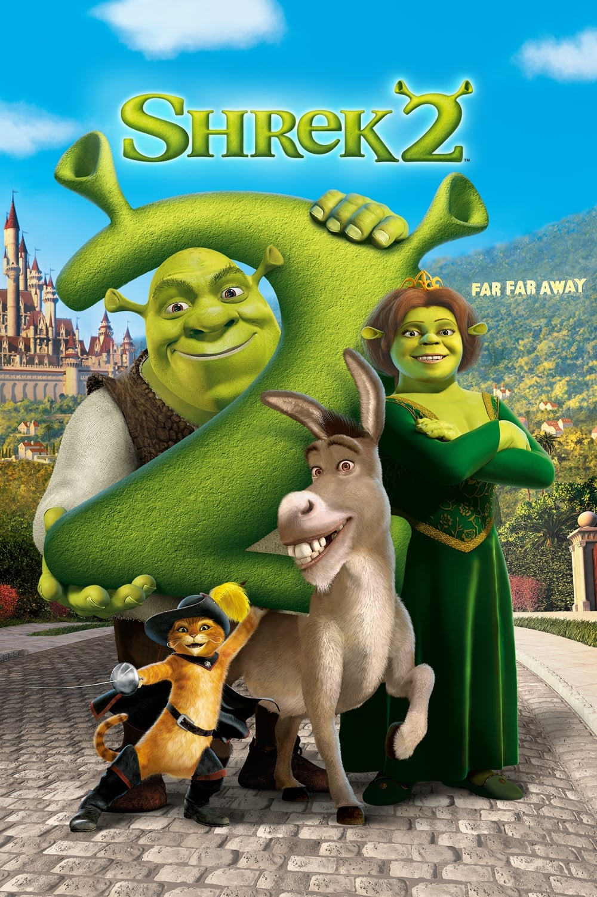
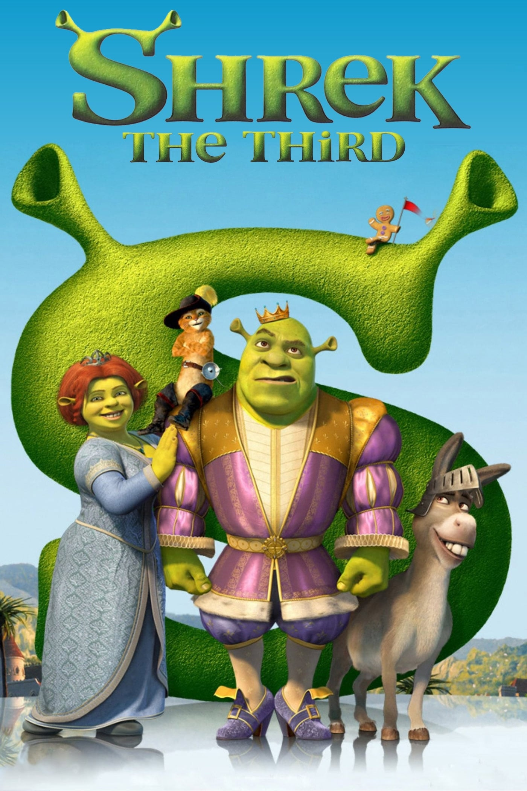

Home
Menu
Introduction
Shrek 1
Shrek 2
Shrek the Third
Body Positivity in
Celebrating Unconventional Beauty Standards
Shrek's Unique Take on Body Image: Celebrating Diversity and Self-Love
Shrek challenges traditional beauty standards by featuring an unconventional hero who celebrates diversity, from Fiona's transformation to Puss in Boots' small stature. Watch as we analyze the messages and celebrate the power of self-love and acceptance in the Shrek franchise.
Embracing the Ogre Within: Shrek's Unconventional Approach to Body Positivity.
Shrek has become an emblem of body positivity and self-affirmation. Right from the first movie, the franchise challenged the traditional norms of beauty by featuring an ogre as the protagonist, who was proud of his green complexion, large ears, and non-conventional appearance. Shrek's exceptional stance on body image conveys a strong message about the significance of embracing our individuality and loving ourselves just as we are.
Shrek 2: The Body Positive Revolution Continues!
Shrek 2 continues the themes of body positivity and self-love that were established in the first film. In the movie, we see Shrek struggling with his newfound fame and attention as a celebrity, which puts pressure on him to conform to society's standards of beauty and behavior. However, the film ultimately subverts these expectations and reinforces the importance of self-acceptance and love. Shrek 2 reinforces the idea that true beauty and worth come from within and that we should embrace our unique qualities, even if they don't conform to societal norms. The film encourages us to reject the pressure to conform to external standards of beauty and instead embrace our individuality and self-love.

The Power of Embracing Uniqueness: Shrek the Third's Body Positive Message
In Shrek the Third, the theme of embracing one's individuality and being true to oneself is central to the story. The film challenges traditional gender roles and expectations, particularly in the character of Princess Fiona. Fiona also shows self-love and acceptance when she embraces her inner ogre and takes pride in her unique appearance, even in the face of societal pressure to conform to traditional princess standards. Shrek the Third reinforces the importance of accepting oneself and others for who they are, and promotes body positivity and diversity through its themes and characters.


Previous
Next
Take me back! ↑